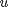
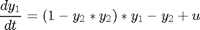
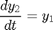
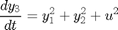
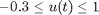
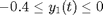
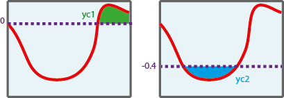
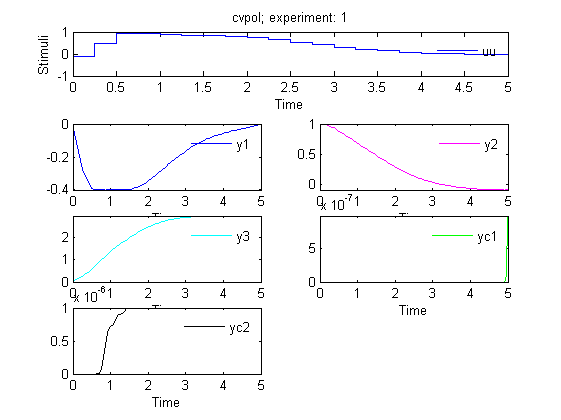

AMIGO_DO -- Dynamic Optimization with constraints
Contents
AMIGO_DO can handle non-linear path and point constraints as well as bounds on the stimuli. Path constraints and point constraints (except for end-point constraints) will be handled by forcing an integral measure of their violation to a value close to zero (violation tolerance). This will imply a modification of the model to incorporate constraint violation over time or at specific times.
See also
- IVP solvers
- How to input a problem in AMIGO
- How to solve unconstrained dynamic optimization problems
- How to re-optimize to refine stimulation profiles in CVP
- How to solve multi-objective dynamic optimization problems
- How to solve multi-objective dynamic optimization problems with the weighted sum method (WSM)
Example
This is a well know dynamic optimization problem often used as a benchmark case for DO methods. The objective is to simultaneously minimize the amplitude of the oscillations and the control effort subject to the oscillator dynamics and maximum and minimum allowed values for the control .
REMARK: two path constraints are impossed: -0.4<=y_1(t) , t in [0,t_f] y_1(t)<=0, t in [0, t_f]





clear; %====================== % PATHS RELATED DATA %====================== inputs.pathd.results_folder='constrained_vpol'; % Folder to keep results (in Results\) inputs.pathd.short_name='cvpol'; % To identify figures and reports %====================== % MODEL RELATED DATA %====================== inputs.model.input_model_type='charmodelC'; % Model type inputs.model.n_st=5; % Number of states inputs.model.n_par=0; % Number of parameters inputs.model.n_stimulus=1; % Number of stimuli inputs.model.st_names=char('y1','y2','y3','yc1','yc2'); % Names of the states inputs.model.stimulus_names=char('uu'); % Names of the stimuli inputs.model.eqns=... % Model char('dy1=(1-y2*y2)*y1-y2+uu',... 'dy2=y1',... 'dy3=y1*y1+y2*y2+uu*uu',... 'dyc1=(fmax(y1,0))^2',... % Handles path constraint violation (see Figure) 'dyc2=(fmax(-0.4-y1,0))^2'); % Handles path constraint violation (see Figure)

%========================================== % Dynamic optimization problem formulation %========================================== inputs.DOsol.y0=[0 1 0 0 0]; % Initial conditions inputs.DOsol.tf_type='fixed'; % Experiments duration (fixed or free) inputs.DOsol.tf_guess=5; % COST FUNCTION inputs.DOsol.DOcost_type='min'; % max/min inputs.DOsol.DOcost='y3'; % ALGEBRAIC CONSTRAINTS % END POINT CONSTRAINTS. Note that to define PATH CONSTRAINTS new states have % to be added to the system dynamics. %This allows to transform Path into final-time constraints. % inputs.DOsol.n_const_eq_tf=0; % inputs.DOsol.const_eq_tf=[]; % c(y,u,tf)=0 % inputs.DOsol.eq_const_max_viol=1.0e-6; inputs.DOsol.n_const_ineq_tf=2; % Constraint violation must be close to zero inputs.DOsol.const_ineq_tf=char('yc1','yc2'); % c(y,u,tf)<=0 inputs.DOsol.ineq_const_max_viol=1.0e-6; % CVP DETAILS inputs.DOsol.u_interp='stepf'; % Stimuli interpolation inputs.DOsol.n_steps=20; % Number of steps inputs.DOsol.u_guess=0.4*ones(1,inputs.DOsol.n_steps); % Initial guess for the input inputs.DOsol.u_min=-0.3*ones(1,inputs.DOsol.n_steps); inputs.DOsol.u_max=1*ones(1,inputs.DOsol.n_steps); % Minimum and maximum value for the input inputs.DOsol.t_con=[0:5/inputs.DOsol.n_steps:5]; % Input swithching times %================================== % NUMERICAL METHDOS RELATED DATA %================================== % SIMULATION % Default for charmodel C: CVODES %OPTIMIZATION inputs.nlpsol.nlpsolver='local_ipopt'; % In this case the problem can be solved with % a local optimizer
More information regarding the inputs used in this example can be found here.
AMIGO_Prep(inputs); AMIGO_DO(inputs);
***********************************
* AMIGO, Copyright @CSIC *
* AMIGO2_R1 [July 2013] *
***********************************
*Date: 28-Sep-2015
------>Pre processing....this may take a few seconds.
------>Checking inputs....
------> WARNING message
AMIGO_check_model: You did not specify inputs.model.exe_type, standard will be assumed
------> Generating C code ...
------> Mexing files....
D:\AMIGO2_REPO_2014\AMIGO_R2012_cvodes\Kernel\IVP_solvers\cvodes\C_src4Amigo\src\src_amigo\simulate_amigo_model.c: In function 'simulate_amigo_model':
D:\AMIGO2_REPO_2014\AMIGO_R2012_cvodes\Kernel\IVP_solvers\cvodes\C_src4Amigo\src\src_amigo\simulate_amigo_model.c:330:6: warning: passing argument 1 of 'mexPrintf' from incompatible pointer type [enabled by default]
mexPrintf(stderr,"\nSolver failed at flag = CVode(cvode_mem, tout, y, &t, CV_TSTOP_RETURN);. . .\n");
^
In file included from D:\AMIGO2_REPO_2014\AMIGO_R2012_cvodes\Kernel\IVP_solvers\cvodes\C_src4Amigo\include\include_amigo/simulate_amigo_model.h:4:0,
from D:\AMIGO2_REPO_2014\AMIGO_R2012_cvodes\Kernel\IVP_solvers\cvodes\C_src4Amigo\src\src_amigo\simulate_amigo_model.c:1:
C:\MATLAB\R2011B~1\extern\include/mex.h:209:14: note: expected 'const char *' but argument is of type 'struct FILE *'
EXTERN_C int mexPrintf(
^
D:\AMIGO2_REPO_2014\AMIGO_R2012_cvodes\Kernel\IVP_solvers\cvodes\C_src4Amigo\src\src_interface\interface_with_matlab.c: In function 'mexFunction':
D:\AMIGO2_REPO_2014\AMIGO_R2012_cvodes\Kernel\IVP_solvers\cvodes\C_src4Amigo\src\src_interface\interface_with_matlab.c:200:17: warning: assignment from incompatible pointer type [enabled by default]
stats_struct = mxGetPr(plhs[5]);
^
------>Files generated....
***********************************
* AMIGO, Copyright @CSIC *
* AMIGO2_R1 [July 2013] *
***********************************
*Date: 28-Sep-2015
------>Checking inputs....
The following files have been created:
ans =
D:\AMIGO2_REPO_2014\AMIGO_R2012_cvodes\Results\constrained_vpol\AMIGO_DOcost_cvpol.m
ans =
D:\AMIGO2_REPO_2014\AMIGO_R2012_cvodes\Results\constrained_vpol\AMIGO_DOconst_cvpol.m
*************************************************************************
------>IMPORTANT!!: Most of the optimization solvers have their own
tunning parameters (options).
Defaults have been assigned in the *NLPsolver*_options
files. You may need to modify those settings for your
particular problem, specially:
- maximum number of function evaluations /iterations,
- maximum computational time
******************************************************************
Solving the NLP problem with Local Optimizer: ipopt
Summary of selected local solver (ipopt) options:
maxeval: 500,
maxtime: 60
>Bounds on the unknowns:
v_guess(1)=0.400000; v_min(1)=-0.300000; v_max(1)=1.000000;
v_guess(2)=0.400000; v_min(2)=-0.300000; v_max(2)=1.000000;
v_guess(3)=0.400000; v_min(3)=-0.300000; v_max(3)=1.000000;
v_guess(4)=0.400000; v_min(4)=-0.300000; v_max(4)=1.000000;
v_guess(5)=0.400000; v_min(5)=-0.300000; v_max(5)=1.000000;
v_guess(6)=0.400000; v_min(6)=-0.300000; v_max(6)=1.000000;
v_guess(7)=0.400000; v_min(7)=-0.300000; v_max(7)=1.000000;
v_guess(8)=0.400000; v_min(8)=-0.300000; v_max(8)=1.000000;
v_guess(9)=0.400000; v_min(9)=-0.300000; v_max(9)=1.000000;
v_guess(10)=0.400000; v_min(10)=-0.300000; v_max(10)=1.000000;
v_guess(11)=0.400000; v_min(11)=-0.300000; v_max(11)=1.000000;
v_guess(12)=0.400000; v_min(12)=-0.300000; v_max(12)=1.000000;
v_guess(13)=0.400000; v_min(13)=-0.300000; v_max(13)=1.000000;
v_guess(14)=0.400000; v_min(14)=-0.300000; v_max(14)=1.000000;
v_guess(15)=0.400000; v_min(15)=-0.300000; v_max(15)=1.000000;
v_guess(16)=0.400000; v_min(16)=-0.300000; v_max(16)=1.000000;
v_guess(17)=0.400000; v_min(17)=-0.300000; v_max(17)=1.000000;
v_guess(18)=0.400000; v_min(18)=-0.300000; v_max(18)=1.000000;
v_guess(19)=0.400000; v_min(19)=-0.300000; v_max(19)=1.000000;
v_guess(20)=0.400000; v_min(20)=-0.300000; v_max(20)=1.000000;
-------------------------------
Initial value problem related active settings
-------------------------------
ivpsolver: cvodes
RelTol: 1e-007
AbsTol: 1e-007
MaxStepSize: Inf
MaxNumberOfSteps: 100000
Local search number: 1
Call local solver: IPOPT
Initial point function value: 12.167108
This is Ipopt version 3.4.1, running with linear solver ma27.
Number of nonzeros in equality constraint Jacobian...: 0
Number of nonzeros in inequality constraint Jacobian.: 40
Number of nonzeros in Lagrangian Hessian.............: 0
Total number of variables............................: 20
variables with only lower bounds: 0
variables with lower and upper bounds: 20
variables with only upper bounds: 0
Total number of equality constraints.................: 0
Total number of inequality constraints...............: 2
inequality constraints with only lower bounds: 0
inequality constraints with lower and upper bounds: 0
inequality constraints with only upper bounds: 2
iter objective inf_pr inf_du lg(mu) ||d|| lg(rg) alpha_du alpha_pr ls
0 1.2167108e+01 5.31e+00 2.25e+00 0.0 0.00e+00 - 0.00e+00 0.00e+00 0
1 5.2809454e+00 2.54e-01 2.27e+00 -1.3 3.46e-01 - 5.31e-01 1.00e+00f 1
2 4.9469078e+00 9.17e-01 3.67e+00 -1.9 1.07e+00 - 7.02e-01 8.09e-01f 1
3 4.2622910e+00 9.00e-01 4.37e+00 -0.8 9.17e-01 - 1.00e+00 9.90e-01f 1
4 3.6157906e+00 8.60e-01 1.74e+00 -0.8 8.30e-01 - 9.99e-01 1.00e+00f 1
5 3.3355096e+00 2.86e-02 1.12e+00 -1.6 8.13e-01 - 9.94e-01 1.00e+00h 1
6 3.2388238e+00 1.46e-02 4.82e-01 -1.9 3.95e-02 - 1.00e+00 6.44e-01h 1
7 3.1973120e+00 5.24e-03 7.25e-01 -3.1 3.12e-02 - 1.00e+00 9.90e-01h 1
8 3.1480499e+00 2.89e-03 1.23e+01 -3.1 6.40e-02 - 1.00e+00 4.99e-01h 1
9 2.8983249e+00 1.27e-02 5.80e+00 -3.4 3.70e-01 - 1.00e+00 1.00e+00f 1
iter objective inf_pr inf_du lg(mu) ||d|| lg(rg) alpha_du alpha_pr ls
10 2.9108675e+00 4.53e-03 7.43e-01 -2.6 1.04e-01 - 1.00e+00 1.00e+00f 1
11 3.0038548e+00 6.11e-03 9.35e-01 -2.8 6.66e-02 - 9.71e-01 1.00e+00H 1
12 2.9678691e+00 2.51e-04 5.22e-01 -2.5 7.42e-02 - 1.00e+00 9.90e-01f 1
13 2.9677287e+00 1.20e-04 1.90e+01 -3.3 2.60e-02 - 1.00e+00 5.42e-01h 1
14 2.9555502e+00 9.03e-05 4.56e+01 -3.4 1.97e-01 - 1.00e+00 5.12e-01f 1
15 2.9617379e+00 4.80e-05 1.03e-01 -4.1 3.35e-02 - 1.00e+00 1.00e+00h 1
16 2.9620635e+00 2.33e-05 1.89e+01 -4.6 2.99e-02 - 1.00e+00 6.84e-01h 1
17 2.9664017e+00 5.94e-06 2.20e-01 -5.0 1.51e-02 - 1.00e+00 1.00e+00h 1
18 2.9669372e+00 4.47e-06 1.70e+02 -5.0 7.24e-03 - 1.00e+00 2.65e-01h 1
19 2.9687339e+00 3.28e-06 1.90e-01 -5.0 1.11e-02 - 1.00e+00 1.00e+00h 1
iter objective inf_pr inf_du lg(mu) ||d|| lg(rg) alpha_du alpha_pr ls
20 2.9681241e+00 2.15e-06 1.34e-01 -5.0 7.29e-03 - 1.00e+00 1.00e+00h 1
21 2.9693424e+00 4.23e-07 1.48e-01 -5.0 5.59e-03 - 1.00e+00 9.87e-01h 1
22 2.9697265e+00 4.06e-08 4.84e-02 -5.0 2.15e-03 - 1.00e+00 1.00e+00h 1
23 2.9697486e+00 3.43e-09 2.23e-02 -5.0 2.28e-03 - 1.00e+00 1.00e+00h 1
24 2.9700347e+00 8.49e-10 7.60e-02 -5.0 1.15e-02 - 1.00e+00 1.00e+00H 1
25 2.9697133e+00 2.85e-08 1.04e-02 -5.0 5.42e-03 - 1.00e+00 1.00e+00f 1
26 2.9696957e+00 2.80e-08 6.76e-03 -5.0 2.53e-03 - 1.00e+00 1.00e+00h 1
27 2.9697213e+00 8.61e-10 6.20e-03 -5.0 9.09e-04 - 1.00e+00 1.00e+00h 1
28 2.9697194e+00 3.47e-09 1.90e-02 -5.0 2.53e-03 - 1.00e+00 1.00e+00h 1
29 2.9697601e+00 6.62e-11 5.24e-02 -5.0 4.29e-03 - 1.00e+00 1.00e+00H 1
iter objective inf_pr inf_du lg(mu) ||d|| lg(rg) alpha_du alpha_pr ls
30 2.9696833e+00 6.96e-08 5.02e-02 -5.0 3.15e-03 - 1.00e+00 1.00e+00f 1
31 2.9696894e+00 3.20e-08 4.38e-03 -5.0 5.57e-03 - 1.00e+00 1.00e+00h 1
32 2.9697154e+00 6.03e-09 2.40e-02 -5.0 2.71e-03 - 1.00e+00 1.00e+00h 1
33 2.9697139e+00 3.46e-09 7.24e-03 -5.0 7.42e-04 - 1.00e+00 1.00e+00h 1
34 2.9697231e+00 1.43e-10 1.29e-02 -5.0 6.01e-04 - 1.00e+00 1.00e+00H 1
35 2.9697176e+00 1.41e-09 2.85e-03 -5.0 3.96e-04 - 1.00e+00 1.00e+00h 1
36 2.9697149e+00 1.45e-11 3.45e-03 -5.0 1.35e-04 - 1.00e+00 1.00e+00H 1
37 2.9697148e+00 4.06e-11 8.92e-04 -5.0 7.26e-05 - 1.00e+00 1.00e+00h 1
38 2.9697148e+00 8.28e-12 9.55e-04 -5.0 1.49e-04 - 1.00e+00 1.00e+00h 1
39 2.9697148e+00 5.48e-12 2.79e-04 -5.0 6.37e-05 - 1.00e+00 1.00e+00h 1
iter objective inf_pr inf_du lg(mu) ||d|| lg(rg) alpha_du alpha_pr ls
40 2.9697148e+00 3.29e-12 1.75e-04 -5.0 3.24e-05 - 1.00e+00 1.00e+00h 1
41 2.9697148e+00 7.81e-13 8.33e-05 -5.0 2.94e-05 - 1.00e+00 1.00e+00h 1
42 2.9696968e+00 7.40e-09 9.19e-03 -6.0 7.00e-05 - 1.00e+00 1.00e+00f 1
43 2.9696973e+00 1.73e-11 2.75e-04 -6.0 1.65e-05 - 1.00e+00 1.00e+00h 1
44 2.9697155e+00 7.76e-09 1.11e-02 -5.0 1.61e-04 - 1.00e+00 1.00e+00f 1
45 2.9697142e+00 4.62e-09 4.62e-03 -5.0 2.11e-04 - 1.00e+00 1.00e+00h 1
46 2.9697187e+00 3.55e-09 2.63e-03 -5.0 7.88e-05 - 1.00e+00 1.00e+00h 1
47 2.9697148e+00 9.32e-12 8.58e-04 -5.0 1.41e-05 - 1.00e+00 1.00e+00h 1
48 2.9697147e+00 2.71e-11 6.16e-04 -5.0 4.34e-05 - 1.00e+00 1.00e+00h 1
49 2.9697148e+00 4.37e-12 6.37e-05 -5.0 1.90e-05 - 1.00e+00 1.00e+00h 1
iter objective inf_pr inf_du lg(mu) ||d|| lg(rg) alpha_du alpha_pr ls
50 2.9696975e+00 5.68e-09 1.02e-02 -6.0 9.69e-05 - 1.00e+00 1.00e+00f 1
51 2.9697014e+00 3.62e-09 1.62e-03 -6.0 5.91e-05 - 1.00e+00 1.00e+00h 1
52 2.9696972e+00 7.19e-11 2.51e-03 -6.0 1.06e-04 - 1.00e+00 1.00e+00h 1
53 2.9697153e+00 7.74e-09 7.43e-03 -5.0 1.19e-04 - 1.00e+00 1.00e+00f 1
54 2.9697147e+00 4.66e-11 2.96e-04 -5.0 5.51e-05 - 1.00e+00 1.00e+00h 1
55 2.9697148e+00 5.34e-13 2.55e-04 -5.0 1.15e-05 - 1.00e+00 1.00e+00h 1
56 2.9697148e+00 7.76e-13 1.88e-04 -5.0 2.07e-05 - 1.00e+00 1.00e+00h 1
57 2.9697148e+00 3.87e-13 1.16e-04 -5.0 2.07e-05 - 1.00e+00 1.00e+00h 1
58 2.9697148e+00 9.10e-15 6.00e-04 -5.0 4.32e-05 - 1.00e+00 1.00e+00H 1
59 2.9697148e+00 5.66e-12 4.94e-05 -5.0 3.89e-05 - 1.00e+00 1.00e+00h 1
iter objective inf_pr inf_du lg(mu) ||d|| lg(rg) alpha_du alpha_pr ls
60 2.9696968e+00 7.47e-09 9.92e-03 -6.0 9.83e-05 - 1.00e+00 1.00e+00f 1
61 2.9696972e+00 2.33e-11 4.44e-04 -6.0 5.26e-05 - 1.00e+00 1.00e+00h 1
62 2.9696972e+00 7.11e-12 7.66e-04 -6.0 3.66e-05 - 1.00e+00 1.00e+00h 1
63 2.9696972e+00 3.00e-12 4.61e-05 -6.0 2.21e-05 - 1.00e+00 1.00e+00h 1
64 2.9696972e+00 1.15e-13 7.66e-05 -6.0 7.86e-06 - 1.00e+00 1.00e+00h 1
65 2.9696972e+00 1.48e-13 3.48e-05 -6.0 2.89e-05 - 1.00e+00 1.00e+00h 1
66 2.9696972e+00 3.60e-15 4.80e-04 -6.0 2.89e-05 - 1.00e+00 1.00e+00H 1
67 2.9696972e+00 3.17e-12 8.47e-06 -6.0 2.63e-05 - 1.00e+00 1.00e+00h 1
Number of Iterations....: 67
(scaled) (unscaled)
Objective...............: 2.9696972318701564e+00 2.9696972318701564e+00
Dual infeasibility......: 8.4662092666564530e-06 8.4662092666564530e-06
Constraint violation....: 0.0000000000000000e+00 0.0000000000000000e+00
Complementarity.........: 9.0909090909089379e-07 9.0909090909089379e-07
Overall NLP error.......: 8.4662092666564530e-06 8.4662092666564530e-06
Number of objective function evaluations = 77
Number of objective gradient evaluations = 68
Number of equality constraint evaluations = 0
Number of inequality constraint evaluations = 77
Number of equality constraint Jacobian evaluations = 0
Number of inequality constraint Jacobian evaluations = 68
Number of Lagrangian Hessian evaluations = 0
Total CPU secs in IPOPT (w/o function evaluations) = 2.605
Total CPU secs in NLP function evaluations = 2.692
EXIT: Optimal Solution Found.
Local solution function value: 2.969697
Number of function evaluations in the local search: 3056
CPU Time of the local search: 5.310697 seconds
----------------------------------------
>>>> DYNAMIC OPTIMIZATION:
----------------------------------------
>>>> Best objective function: min = 2.969697e+000
>>>> Best control profile:
>>>> Control u: 1
-0.096773 0.487622 0.926436 0.925037 0.872991 0.822412 0.821872 0.806548 0.738450 0.639713 0.527823 0.415414 0.310878 0.219214 0.142907 0.082667 0.038051 0.007963 -0.009033 -0.012920
>>>> Switching times:
0.000000 0.250000 0.500000 0.750000 1.000000 1.250000 1.500000 1.750000 2.000000 2.250000 2.500000 2.750000 3.000000 3.250000 3.500000 3.750000 4.000000 4.250000 4.500000 4.750000 5.000000
>>>> Final time: 5.000000
>>>> Constraints violation (c<=0): Equality constraints, Inequality constraints, Control constraints
c(1)=9.94e-007;
c(2)=1.01e-006;
------>Plotting results....
Sorry, convergence curve plot is not available for local solvers, at the moment
------>Results (report and struct_results.mat) and plots were kept in the directory:
Results\constrained_vpol\OD_cvpol_local_ipopt_run1
Click <a href="matlab: cd('D:\AMIGO2_REPO_2014\AMIGO_R2012_cvodes\Results\constrained_vpol\OD_cvpol_local_ipopt_run1')">here</a> to go to the results folder or <a href="matlab: load('D:\AMIGO2_REPO_2014\AMIGO_R2012_cvodes\Results\constrained_vpol\OD_cvpol_local_ipopt_run1\strreport_cvpol_run1.mat')">here</a> to load the results.
 References
Vassiliadis, V. S.; Balsa-Canto, E.; Banga, J. R. Second order sensitivities of general dynamic systems with application to optimal control problems. Chem. Eng. Sci. 1999, 54, 3851.
AMIGO_htmldoc_inputs(inputs,fullfile(pwd,'html','doinputsc.html'));